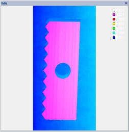
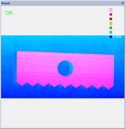

Công cụ biến đổi affine đám mây điểm chủ yếu được dùng để thực hiện biến đổi affine trên ảnh độ sâu đầu vào, xuất ra ảnh sau khi biến đổi để phục vụ xử lý tiếp theo. Các thao tác affine hỗ trợ bao gồm: tịnh tiến, xoay, và thu phóng.

| Phân loại | Tên tham số | Mô tả tham số |
|---|---|---|
| Cửa sổ thuộc tính | Loại góc xoay | Xoay ảnh độ sâu gốc theo góc ngược chiều kim đồng hồ, có 5 kiểu góc: 0 độ, 90 độ, 180 độ, 270 độ và góc tùy chỉnh. |
| Góc xoay | Góc xoay do người dùng tự thiết lập, chỉ áp dụng khi chọn “góc tùy chỉnh”. | |
| Loại phản chiếu | Áp dụng phản chiếu cho ảnh độ sâu gốc, gồm 4 kiểu: không phản chiếu, phản chiếu ngang, phản chiếu dọc và cả ngang + dọc. | |
| Có tịnh tiến không | Chọn “Có” để thực hiện tịnh tiến sau xoay và phản chiếu. | |
| Độ tịnh tiến theo trục X | Mức độ dịch chuyển theo hướng X trong phép tịnh tiến, đơn vị pixel. | |
| Độ tịnh tiến theo trục Y | Mức độ dịch chuyển theo hướng Y trong phép tịnh tiến, đơn vị pixel. | |
| Kiểu điền pixel | Có 3 kiểu: không điền, điền giá trị cố định, điền theo giá trị lân cận. Dùng để lấp đầy vùng không hợp lệ sau biến đổi affine. Kích hoạt khi có xoay tùy chỉnh hoặc tịnh tiến. | |
| Giá trị điền pixel | Có hiệu lực khi kiểu điền là “giá trị cố định”, giá trị trong khoảng [-32768, 32767]. | |
| Bật thu phóng | Chọn “Có” để thực hiện thu phóng sau các biến đổi khác. | |
| Hệ số thu phóng X | Hệ số thu phóng theo trục X, giá trị nằm trong khoảng [0.01, 2]. | |
| Hệ số thu phóng Y | Hệ số thu phóng theo trục Y, giá trị nằm trong khoảng [0.01, 2]. | |
| Cửa sổ hình ảnh | Ảnh độ sâu đầu vào | Hiển thị ảnh độ sâu cần biến đổi. |
| Chuỗi dữ liệu | Ảnh độ sâu đầu vào | Ảnh độ sâu cần được thực hiện biến đổi. |
| Giao diện nâng cao | Không có | Không có |
| Phân loại | Tên tham số | Mô tả tham số |
|---|---|---|
| Cửa sổ giám sát | Ảnh độ sâu đầu ra | Kích thước chiều dài, chiều rộng và độ phân giải của ảnh độ sâu đầu ra, cùng với các tham số dữ liệu độ sâu. |
| Kết quả thực thi | Kết quả thực thi của công cụ. | |
| Thời gian thực thi | Thời gian thực thi của công cụ. | |
| Cửa sổ hình ảnh | Ảnh độ sâu đầu ra | Hiển thị ảnh kết quả thực thi của công cụ, giống với thông số ảnh độ sâu đầu ra trong cửa sổ giám sát. |
| Kết quả thực thi | Hiển thị kết quả thực thi của công cụ, nếu thành công sẽ hiển thị "OK", thất bại hiển thị "NG", giống với tham số kết quả thực thi trong cửa sổ giám sát. | |
| Chuỗi dữ liệu | Ảnh độ sâu đầu ra | Ảnh độ sâu sau khi xoay được xuất ra để sử dụng cho các công cụ khác. |
Không có
Không có
参见“\Samples\3D\深度图\点云仿射变换工具.gvp”。